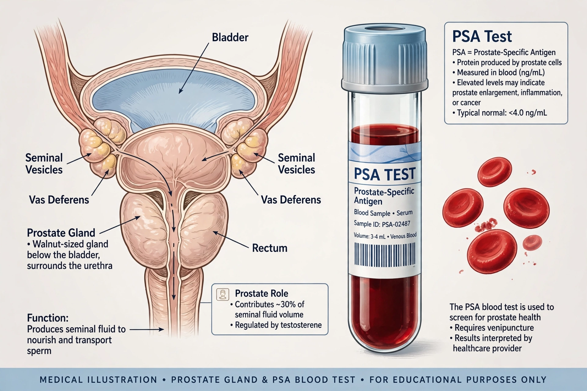

| Prostate-specific antigen | |
|---|---|
 | |
| Gene | KLK3 (kallikrein-3), chromosome 19 |
| Normal role | Liquefies semen (serine protease) |
| Test use | Prostate cancer screening and monitoring |
| Typical reference | Often <4 ng/mL, age-dependent |
Prostate-specific antigen (PSA), also known as gamma-seminoprotein or kallikrein-3 (KLK3), is a glycoprotein enzyme produced by the epithelial cells of the prostate gland. PSA liquefies semen in the seminal coagulum, aiding sperm motility. Small amounts normally circulate in the blood of healthy men; the PSA test, a blood test, measures this concentration and is the best-known medical test for prostate cancer screening and follow-up.
PSA rises when the prostate's architecture is disturbed — by cancer, but also by benign prostatic hyperplasia, prostatitis, urinary retention, recent ejaculation or prostate manipulation. A commonly used threshold is 4 ng/mL, above which further investigation (multiparametric MRI and/or biopsy) may be considered, though age-specific ranges and PSA density, velocity and free-to-total ratio refine risk assessment. After treatment for prostate cancer, PSA monitoring detects recurrence early.
Population PSA screening reduces prostate cancer mortality modestly (the European ERSPC trial found about a 20% relative reduction) but at the cost of substantial overdiagnosis — detection of indolent cancers that would never have caused symptoms — and overtreatment with risks of incontinence and impotence. The US Preventive Services Task Force recommends individual, shared decision-making for men aged 55–69 and advises against routine screening over 70. Modern pathways that combine PSA with MRI before biopsy aim to keep the benefit while reducing harm, an approach aligned with precision medicine.
PSA was characterised in the 1970s (notably by T. Ming Chu's group) and purified from prostate tissue; blood testing entered clinical use in the late 1980s and was approved for early detection in the 1990s, driving a sharp rise in prostate cancer diagnoses.
See also: Medical test · Blood test · Precision medicine